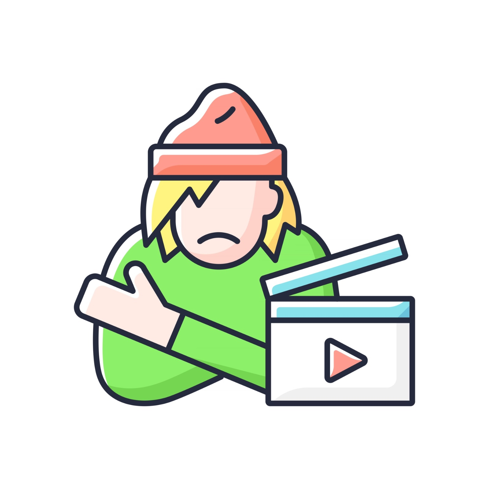

SVSP Technologies
Founder
Directing the establishment and development of a startup, overseeing the optimization of a data-driven productivity application.
Founder
Directing the establishment and development of a startup, overseeing the optimization of a data-driven productivity application.
Sahiti TLA
Club executive
Actively took responsibility for team management, recruitment, volunteering, and technical aspects within the club. Performed as a dancer at the Annual Fest “Riviera 2020” and other cultural events.
Club executive
Actively took responsibility for team management, recruitment, volunteering, and technical aspects within the club. Performed as a dancer at the Annual Fest “Riviera 2020” and other cultural events.

Chronic Urban Poverty
Documentarian
Documented the adversities faced by my local slum residents to raise awareness.
Documentarian
Documented the adversities faced by my local slum residents to raise awareness.